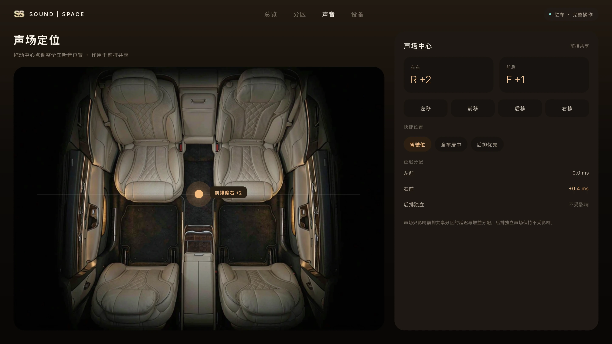
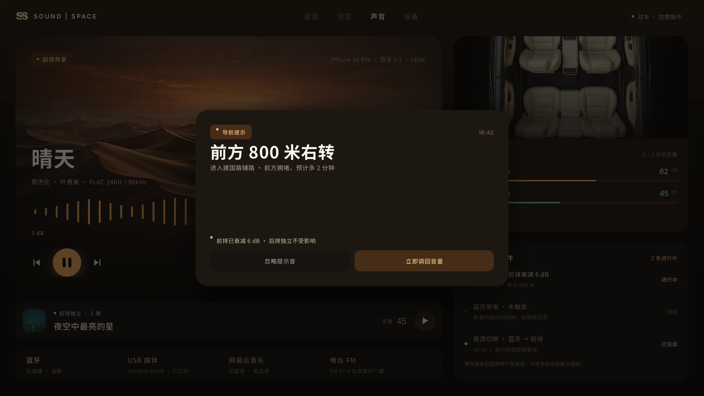
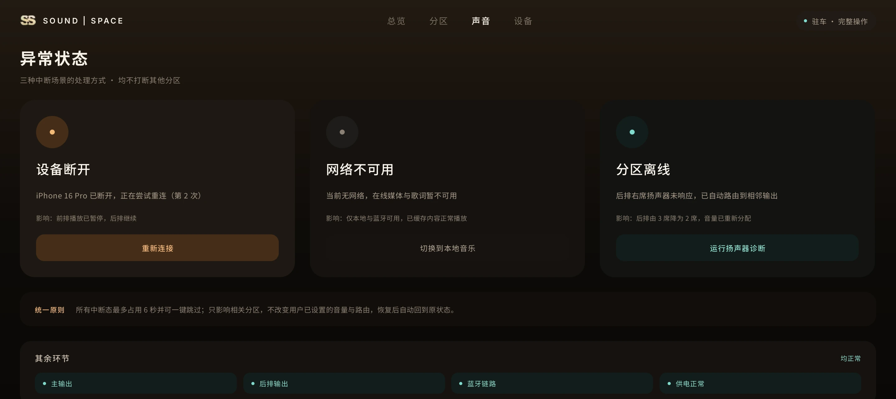
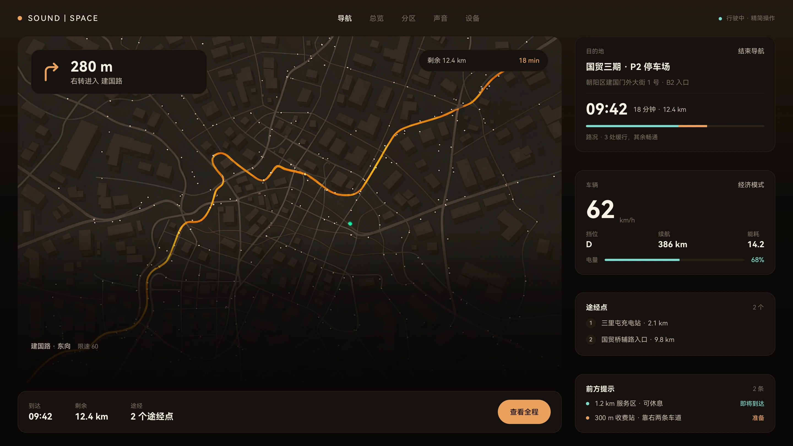

IN-CAR AUDIO HMI
SOUNDSPACE
让「声音为什么变了」，看得见。
车内三个分区共享一套音响。用户听得见音量变小，却看不见是谁在改、改的是哪一块、还回不回得来。SOUNDSPACE 把音频焦点、区域路由与设备状态从系统内部外化成可读的界面：五个入口、十一屏、一套统一的控件语言。

同一套音响，三个分区同时在争抢它。
导航播报进来时前排被压低、后排放歌时前排被动改动、蓝牙断开只丢一块区域——传统车机上这些事只有一个结果：音量条动了，而用户不知道为什么。声音系统内部真正在发生的事（谁在占用、衰减了多少、什么时候恢复）从来没有被呈现过。
这一版把「系统内部」搬到界面上：谁在占用音频焦点、衰减了多少、什么时候恢复、断开之后还剩什么，都写成用户能读的句子。
设计目标不是增加功能，而是让每一次声音变化都能被追溯——用户听得见的变化，界面上必须找得到原因。
- 打断 ≠ 暂停：导航播报只压低音量，播放进度、队列和音频焦点都不转移；恢复时回到用户原来的状态。
- 先区域，后参数：没有全局音量，任何一次调节都先选「哪一块区域」，再调「调到多少」。
- 禁用不隐藏：条件不满足时控件留在原位、写明原因、给出去处，位置不跳动。
每一屏各答一个问题，而不是一个功能页。
分区总览先回答「三块区域各是多少」；播放页回答「现在谁在放、放在哪」；分区详情回答「我调的是哪一块」；声场与均衡回答「声音位置与频段怎么改」；媒体库与设备回答「还有什么、断开之后剩什么」；设置回答「系统的默认口径是什么」。





「被打断」和「它坏了」，是两件不同的事。
导航介入属于打断：压低音量、留住进度、结束自动恢复。设备断开、网络不可用、分区离线属于异常：需要给出原因与出口，但不该牵动其他分区。
- 打断只降低增益：弹层写明「前排已衰减 6 dB · 后排独立不受影响」，放完自动回到 62。
- 异常只影响相关分区：后排右席未响应时路由到相邻输出、由 3 座降为 2 席，前排音量与路由不动。
- 统一原则：所有中断态最多占 6 秒并可一键跳过，恢复后自动回到用户原状态；这一条同时约束打断与异常两种场景。


行驶时，导航占主区，音频让到一边。
顶栏标明「行驶中 · 精简操作」：导航占据主区，音频事件、车辆状态、途经点与前方位提示收进右侧卡片，驾驶中不需要为了看一眼音量而离开路线。
- 行驶态只收敛入口、不删信息：五个入口保留，设置类操作改为精简态，避免驾驶中做多级跳转。
- 声音状态在行驶中仍然可读：哪个分区在播、被压低了多少，用胶囊与数值呈现，不需要切页确认。

控件语言只有三种：表盘看量、色带看比例、规格表看事实。
音量与声场这类「量」用表盘；电量、电平、占比这类「比例」用色带；系统版本、固件、序列号这类事实用规格表。三种形态各有分工，不在同一页混用。
语义色只用两组：琥珀表示前排共享与系统介入，青绿表示后排独立；同一个颜色不跨语义复用，也不拿颜色单独承担状态。
数字口径统一：音量上限 80 dB、自动重连间隔 30 秒、提示音延迟 0.2 秒、导航介入衰减 6 dB；这些数值都写在设置页与状态卡上，正文只引用界面上能看到的数字。
界面已经成立，能力边界必须说在前面。
这是一套概念方案：界面、状态规则、控件语言都可落地，但 DSP 能力、实车分区音响配置和真实驾驶环境下的可读性都未经实测。
- 已完成：十一屏视觉与交互规则、五个入口（导航／总览／分区／声音／设备）、三条铁律落地、三类异常与两类打断的统一处理、表盘／色带／规格表三套控件语言。
- 待验证：目标车型 DSP 与分区音响配置、头枕扬声器与定向输出等硬件能力、真实驾驶环境下的可读性与注意力负荷。
- 未开展：用户测试（无问卷、无走查记录）、实车联调与硬件回执验证、长时驾驶下的注意力负荷测量。
 维序 WEISU · 让每一次拣货差异，都有据可查、有人负责、有路可走。
维序 WEISU · 让每一次拣货差异，都有据可查、有人负责、有路可走。 智审 · 让合同审查有据可查。
智审 · 让合同审查有据可查。